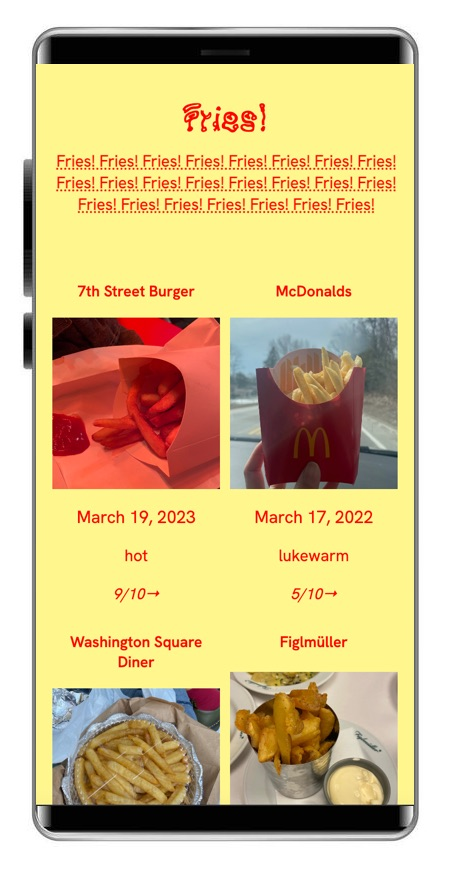

- For my data points, I compiled:
- - The photo of each item
- - Restaurant it is from
- - Photo of the fries
- - Temperature level
- - Date of consumption
- - Rating
I used Kaeru Kaeru for the title font and Hanken Grotesk for the body text


I picked the Kaeru Kaeru font because it reminded me of what it would look like if you used ketchup splatter to write out a message. And the Hanken Grotesk font was a good pick for the body text as it was a clean san serif, easy to read, and reminded me of a font you would see used on a menu.
For the mobile view, I had it be two columns instead of 4, and when making the site, used primarily viewport width and height values so it was more responsive to begin with

When making my site, I had a bit of a hard time establishing the grid/ getting it to load properly, but eventually I figured it out and managed to make it work.
I also was trying to establish a boolean toggle button in the site where you could click it and it would show what fries were crispy and which were not, but I was having a really hard time making it work
If I had more time / more skills with javascript, I would have liked to make the page more interactive, clicking on each photo would bring up a popup menu with more information or the data points, but overall I’m pleased with how it came out